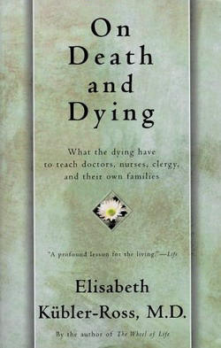

灵能与再世
冯冯
去去来来 / 誊录
佛教相信因果，讲轮回；人所皆知，在佛学上已经有无数解说，用不着浅陋无知的我来妄谈，这里要谈的，不过是随手摭拾的一些西方最新考证。
先提一件，有一位瑞士女博士伊丽莎白。卡柏勒露斯 Dr. Elisabeth Kubler Ross ，今年七月曾到加拿大温哥华演讲，在著名的奥芬大戏院讲了六个小时，听众花了三十五元加币一张门票去听她讲“死后的生命”，报纸与电视台争相访问这位女博士，成为轰动一时之特殊新闻。
卡柏勒露斯博士是兼有两个科学学位的瑞士学者，名闻全球，她有医学博士学位，又有物理学博士学位，论着等身，她从一个完全的怀疑论者，转变为一个当前举世闻名的支持“死后有生命”的学者，她创立了一个研究学社，获得欧美各国不少学者参加研究。她和社友收集了将近五千件全球各角落的真实之轮回与再生故事，均有地点人物为证。此次来加演讲，门票高至三十五元，甚至高过苏联波雪瓦芭蕾舞团演出，高过香港粤剧凤鸣剧团名伶龙剑笙演出票价（前者门票二十五元，后者三十元），如此高昂门票，一般预料门堪罗雀，不料奥芬大戏院座无虚席，数千观众聆听女博士演讲种种真实的轮回故事之后，很多人感动至饮泣，都说三十五元门票不贵，学到了不少人生真谛，值得捐出三十五元来支持这一个学社。
女博士并未说自己是佛教徒，但是我听她所讲，处处都接近佛教思想，至少可以推断她是受到佛教思想的影响。或者我更可这样说：或许她并非佛教徒，但是因为佛教思想是宇宙性的真理，即执其一端，因果与轮回，其实是宇宙的永恒真理之一，女博士以其追求真理之至诚，接近佛理了。
事实上，瑞士智识份子近年来对于佛教研究者越来越多，较远者就是曾获诺贝尔文学奖的名作家，已故之赫尔曼。赫瑟 Hermann Hesse 。瑞士有相当积极研究的佛学研究社，不知卡柏勒露斯博士是否亦是佛社一员，抑或受些影响？不过，她声明并非系以西方宗教为出发点。
要一一提及她演讲中所引述的真实故事，自不可能，只好等她书出版。
女博士引述已故伟大物理学家兼数学家爱因斯坦遗稿之中数段，说明爱氏亦系相信因果至死后有生命之说。可惜女博士讲得太快，而且其浓重之德语口音颇为难懂，我未能记下该段引述，她今年将出版一本专着《死后生命与轮回》，相信购得此书后，一切都可一一读到，我正在密切留意之中。
从数千听众拥挤争听演讲情形来看，有一个发现，就是其中大多数是智识份子，其中不少我知道的大学名教授、工程师、医生、律师、学者，其它多是大学生，少数是年长的社会名流，真是座无白丁，反映出西方社会智识份子的浓厚哲学倾向。这情形与香港、台湾一般的想像完全不同，一般人多认为西方社会是受了西方宗教影响，却不知西方智识份子已经觉醒，渐渐脱离了无法满足他们哲学思想的西方唯物观念与神权思想，转而摸索追求真理与真知。越来越多西方智识青年接近探讨佛教思想。任何有关禅宗的英文书籍，无论深浅，在美国、加拿大都成为抢手的畅销书。可惜佛教人士在美加的耕耘播种者仍然不够多，未能普遍深入，这里面当然涉及到经济能力和很多因素，不在此文讨论之列。
总之，西方社会一般思想已陷入了迷惘彷徨，在觉醒的真空状态之中，于是有颓废消极的嬉皮士，有疯狂的纵欲暴力，假如慈悲和平的佛理能够普及，逐渐由智识份子普及于一般水准的社会，情形必然就不相同了，佛教大德人士请多发心吧！
卡柏勒露斯博士提到人所皆知的“物质不灭定律”，她说宇宙的物质并不是真正的消灭，只是转变成不同形态与特性的“能”。这一点是我所了解的。
比如说汽油燃烧之后产生热能与二氧化碳，热与能工作之后，却并非消灭，只是散布在空气之中，成为另一种形态。比如说一张纸焚烧以后，亦产生热能和碳，纸的形态消失了，但是其散发的热能和二氧化碳，仍然存在，只不过成为游离状态。任何物质莫不如此，只是转位，并非消灭。这是任何人都知道的物理。
生物的生命亦是由各种元素组成的，有水份(两个氢一个氧)，血液中的铁质，骨骼中的钙质、石灰、磷质，其它还有各种元素，如镁、溴、铜等等数十种，与自然界中存在的百余种已知元素并无不同。这些元素，从无机化为有机，构成生命，后来又再分解重归于自然，成为自然界的无机元素，再被生命吸收，直接或间接，重组新生命，循环不绝，只是比例与状态有异，只可说是转位，不能说是消灭，这正是非常客观的科学常识了，不过自然界各种元素组成有机生命之后，会产生更敏感的感觉与知觉，就是能力的一种，和生命所产生的热与静电，都是比无机元素更敏感的，无机物亦有感知，只是我们自以为它们并非具有，元素若无知无感，怎会有质子量子之运动？若称之为物质特性，特性亦是知觉及反应。总之，无论是有情生或无情生，都是广义之生命，都是有知有感，所不同者是知感之程度。
我们砍断一棵树；都说树不会叫痛，不会叫痛？仔细观察看看吧！用不着显微镜也可以看见它的组织在痛楚中颤动，也可看见它的血液汩汩流出，虽然它并非赤红的热血，而现代的植物学家已经发现植物也有情绪反应会发出声音了，我们砍碎一块岩石，假如用电子显微摄影，当可见到其原子在碎裂时的剧烈反应，不过我们不能领会它的痛苦表示罢了。
 所以我总是不愿妄伤一命一物的，佛陀教训我们不可杀生，在我的感受来说，当包括有情与无情两种生命在内，我尊重那些比我们更悠久的生命，我可以感受到木石传递的痛苦，我母无论吃了什么果子都十分珍惜地保留它的种子，尽可能替它们找寻生命的机会。
所以我总是不愿妄伤一命一物的，佛陀教训我们不可杀生，在我的感受来说，当包括有情与无情两种生命在内，我尊重那些比我们更悠久的生命，我可以感受到木石传递的痛苦，我母无论吃了什么果子都十分珍惜地保留它的种子，尽可能替它们找寻生命的机会。
由元素组成的生命，所产生的能，亦是循环转化于宇宙空间的，能量与物质同样不灭，只是转位。狭窄的眼光认为只有地球才有生命，亦认为只有呼吸氧气的才是生命，其实就单以在地球上而论，就已经有不少生命是呼吸碳气的，很多植物就如此。我们焉可武断缺乏氧气的宇宙太空就没有生命？英国天文学家最近宣布发现宇宙中的星云团团，大都含有氢气与碳气与组成有机生命之氨基，它们都有动态感觉。生命充满了整个宇宙，怎可说生命局限于地球？我们的肉体虽离不开氧气与食物生存，但是“能”是较少受到空间限制的，“能”是我们生命的一部分，知觉是“能”的一种，无论我们如何的凡夫俗子，人人体内都会产生热与能，仅仅在昨天我还听到加拿大一位科学家在电视上说，我们人人都放射微波 (Micro-Wave)，份量各有大小，一般人平均在千分之一瓦特左右，苏联科学家曾经公布过用红内线摄影人手指端放射闪电半寸的影片，温哥华的虔诚佛友何君两手发射静电，为佛友治病，引起美国哈佛大学学者前来拍摄实况，这些“能”，都是可传递而且能量不灭，只是转位，集中或分散，在宇宙之中循环不息，生生不已。
基于这些粗浅的了解，我很容易听得明白卡柏勒露斯博士的演讲，她说生命死亡，只不过是狭义的说法，其实是生命的转位或改组，生命之元素返归自然，生命之能进入另一形态，知觉与特性亦随着“能”而不灭，她列举了很多实例，她在电视上说：“若非积二十余年穷究发现，岂敢牺牲我个人的国际学术名誉而轻言生命死后仍然存在？”
她提及知与能可以离体，即是所谓的灵魂出窍，很多人都有过似梦非梦，看见自己已脱离肉体翱翔于树梢，飞游陌生地方，直到他日到达，猛然忆起曾经来过，这就是灵魂离体之现象。她说：生时魂能离体，肉体物化时，当然更能离体，论者有谓，人脑细胞全靠氧气生存，肉体死亡呼吸停止，氧气断绝供应，不到五分钟，脑细胞就死亡了，何来能力？
女博士参考此说，她亦劝人勿以悲痛惊扰垂死亲友，以助他脱出肉体，她说在她访集之数千实例之中，得悉在平静中逝世的死者，都有看见淡金色光明的感觉，但是在不安状况中逝世的人，则见到黑暗，与女博士同来演讲者之一，是一位死后复生的化学博士（名字我此刻记不起），他死后第七天在棺中复活，幸而尚未入土，得以发声敲棺求救而被殡仪馆人员救出，消息曾经轰动全美，这位化学师说起他的死亡之时，见到淡金色光芒，他十分喜悦地翱翔于光芒之中，他亦详述经历各种奇形怪状的烈火冰山与刀山，甚似佛经常听说的地狱。医学界视该人为奇迹，某些教士却视之为骗子而否定其真实。该人说他生还以后，现在对于佛教与大梵思想已发生前所未有之兴趣。因而抛弃了他从出生后受洗的宗教。我当然无从根究他的故事，不过他现在有高尚教席，身为大学教授，出来演讲，不为钱不为名利，亦非传教，只是为了报告经历，促助社会对于生命之研究，似无任何虚妄之可能。
论者是不错的，但是忽略了一点：即是脑细胞早已经产生的能力不会消灭，只是转位飘荡游离于宇宙之间。所以佛家劝人切勿在垂死骨肉面前哀哭惊吓他，是有道理的，所以佛家劝人为垂死者镇静念佛诵经，帮助他集中最后的脑力冷静聚形脱出躯壳，假如亲人痛哭号啕，又以各种不必要之搬动惊扰他，他的脑力无法集中，能就散了，虽不消灭，却失去了充分的知觉，游离不知所以或迷惘附于畜体。
女博士最近在纽约一家大学（似乎是哥伦比亚，我记不清楚）与七十余位来自各国的学术界人士举行一次研讨会，包括欧美著名的医学家、精神学者、心理学家、化学家、物理学家、电子学家、光学家，都是知名之士。大家讨论灵魂问题，亦就是知与能。在七十余位学者重重监视之下，女博士被严格搜身之后，进入大学的一个密封绝缘的玻璃实验室内，室内并无任何仪器，只有一张椅子供其作息。七十学者环观玻璃室内，灯光通明之下，女博士进行打坐瞑目入定，不久她张目，向室外要求讲话。她对七十目击者说，她刚才已经神离躯壳，抵达旧金山某女士寓所内，见到女士在室内所做之家务，厨桌上有何种食物，炉子上煮着何馔，种种详细背景，她均可一一讲出，女士是座中旁观者之一的亲友，与博士素不相识，旁观者立即长途电话询问，证实女博士所讲完全正确无遗。
女博士说自己并无甚修为，尚且可以将能力释放出体外远至三千英里之外，何况修为有素的人呢？她说人人都有这种天赋能力，只不过都被物欲与肉欲所蒙蔽阻塞，又被忧虑所封闭。加拿大广播公司电视记者班斯坦问她：“博士，你真的身临旧金山？”
“不是身临”，她答：“是能到达。”
“是什么能？”
“像微波一样，可以脱出肉体，到达宇宙任何一处。”
半信半疑的班斯坦又问：“你能自主飞游何处吗？”
“可以，但是能力尚微，未能完全随心所欲。”
“你在抵达某女士寓所之时，有无移动她之物件？”
“我尚无此能力，”她答：“但是我知道有些人已经练到有此移物之能。”
是神话吗？是假话吗？有七十余位国际学者为证全非虚言。在我是深信不疑的，因为我自己也偶然神游，曾经神游过从未身至之妙法寺，我曾作一文叙述其详，有关妙法寺的观音小像之灵异等事，但是内明编者来函说恐有为妙法寺自我宣扬之嫌，故此不愿刊登该一小文。我亦神游太虚宇宙，我见到巨大无边的黑暗正在淹没银河系与宇宙其它星云，我无法解释，我不知道这些黑暗是什么反物质？亦不知这一个宇宙以那么巨大的速度，一瞬亿兆光年，反时针方向朝左边旋转，趋向何处（以地球作为观察点）？我看见宇宙之外更有无穷宇宙，无穷的星云，无穷的生命，可是我却不知我身边周围的琐碎俗务，无法处理自己的生活，日夜为生活为环境奔波烦恼，多么愚蠢！
十月二十八日‘加拿大新闻社' (CP) 从多伦多发出之第七七五号电讯说：“灵魂是有的，鬼神是有的，魂附体，魂离体也是有的，加拿大安大略省立桂府大学 U of Guelph 社会学系教授邬居理博士 Dr. Ian Currie 在其新出版之研究专着《你死不了》 (You Cannot Die) 之中，收集他十年来研究搜查之实例，证实确有灵魂。
居理博士是加国著名大学的有地位学者，起先并不相信灵魂，十年前只是以好奇而且企图广泛调查来收集证据，反证灵魂学说之不合科学，不料收集越广，了解越深，竟使他变成了支持灵魂学说。
居理士在加拿大电视上说他的新书中提出四点结论：
──人死后确有另一种形态之生命。
──死后之另一形态生命继续存在于宇宙之间，个别之知觉程度与创造能力各有不同。
──死后之另一形态生命，即俗称灵魂，确有再投生及轮回。
──轮回不断进行，但是并非由于偶然，而系由于因果，每一次轮回均与前后之轮回有关联。
居理博士是个科学研究者，本来相信某一宗教，但现在已改变其宗教思想，他并未说是否倾向佛教。但是很显然他的发现已经与佛教异途同归，旁证了佛教数千年来之真知。
年方四十左右的居理博士，提出此论之后，不用说即刻引起加拿大不少教士之抨击，此是题外，不必多谈。
居理博士在电视上说：十年前他前往美国密歇根州底特律(Detroit)，访问当时在彼主持一个医务所及研究所之加里福尼亚州立大学心理学教授海伦万芭哈博士 (Dr. Helen Wambach) 。 万芭哈博士其时已经是举世闻名之“前生“研究专家，她用心理学眼光来研究数千位能知前生的人士。
居理说：在万芭哈博士的帮助指示之下，他集中精神追溯前生。他发现自己身在沙漠帐篷之内，背后有一座别墅。
“万芭哈女博士叫我看我的双脚，”他说：“我低头一望，看到两脚又瘦又小，竟是女子之脚，我双手抚摩身体，发现我是个美丽的女性，年约十八岁，头上有美丽的黑色垂腰长发。”
居理发现他前生原来是一个巴黎少妇，是一个古代罗马军官的情妇，时间在基督之前，后来又再发现自己另一次前生是第一次世界大战时期之士兵，身在战场内被敌人刺刀刺死，他仍可感觉尖刃插入胃部之痛苦，他可看见自己尸体倒下，他感觉到十分困难才能挣扎脱出躯体。
居理后来回到多伦多，在一位著名的非职业性心灵学家的帮助之下，一一追溯前生，竟一共能忆及前世六生之多，一切往事均细巨无遗，居理均一一予以记录下来。有些心理学家说他是人格分裂，又说是精神失常，他都一笑置之，他说自己知道真到不能再真。从此他更努力求证，获得全球千余件再生轮回之真实故事，我亦在期待着这本新书，居理博士甘冒被学术界及社会抨击之险，公布其经历与研究报告，相信他洵无虚言。
居理说：轮回有转世为人，有转世为畜类，根据业力与善恶而人各不同，他说大多数人均已忘记本来，但是仍有不少人生而知道前身往事，转生人身者，往往前生为异性，一生为女一生为男。
居理说：鬼魂附件体之事亦千真万确，举例说加拿大某大学一名男生对他自述被一女鬼附体，强迫其追求男子发生同性恋之性行为，附体之女鬼感到满足，但是他之本人则感到羞耻，只是无法摆脱，精神学家又说他是人格分裂，但该男生一切精神正常，智商力极高，而且心中十分明白。
居理说：“吾人常遇到之鬼魂，多系不自知肉体已经死亡之灵魂，或者不甘心死亡之魂，或系仍有未了心事，或系不舍亲人，有些仍在人间滞留，游离无所，而不知道肉体之后仍有另一形态生命，亦有些系心中明白而返来安慰亲人，叫人勿畏惧肉体死亡。
再说回头，卡柏勒露斯女博士所备之实例之一，就是美国有一个土著印地安少女在高速公路上撞车死亡，临终时对驰来营救她的一个陌生白人男青年托付遗言，请他带口信给她母亲，少女说：“请叫我母亲不要悲哀，因为我父亲已经来和我相聚了。”
那位青年驾驶摩托单车，奔波数千里，抵达“土著保留地”地址，找到死者少女之母亲，传达口信，那位母亲悲喜集，告诉那位青年说：“女孩的父亲已经死了。”相证时间，女父断气之时，大约是少女伤重逝世之前一小时。
博士说：真有其人其事，此事说明人的灵魂确实存在而且可以离开躯体。
加拿大以出产电影明星著名，老两辈的好莱坞金像奖巨星罗蒙马西，是加拿大总督之弟，很多加拿大演员在本国无前途，却在好莱坞打出天下，不胜枚举，例如主演《仙乐飘飘》(Sound of Music) 的男主角克里斯朵夫普鲁玛，曾经红极一时的美艳女星叶凤黛卡洛与卡洛贝克，都是加拿大人。老一辈的男星葛连福特 (Glenn Ford) 也是加拿大人，葛连福特以演出《胭脂虎》(The Loves of Carmen )出名，他最近已退休，年老的他公布他自己能追忆前生六世之往事。一次是一八零零年代的牧场主人，三十岁时被人枪杀；一次是一八四零年代的钢琴师，患肺病死于三十八岁；再前一生是法国御林军士兵，二十四岁为争女人与人决斗被杀；再前一生是英国水手，死于一六六六年；再前一生是三世纪之罗马基督徒，被投入斗兽场喂了狮子。
去年得金像奖的女星菲尔狄娜亦在电视上公开承认自知前生，是个十七世纪的男子剧作家，故此她十三岁即突然能用古体英文写作剧本。
这些名人都已经名成利就，并无炫奇之必要，甘冒被讥之险，以本身声誉为赌注，公开自称知道前生，我相信是有其诚恳真实的。
零零碎碎说了许多，我只不过是想提供一些旁证，来谈佛教的一小部分通俗观念，当然我的智慧极低，佛学又未入门，难免有错，只当是抛砖引玉吧！
延伸阅读：
天使走过人间：生与死的回忆录
(The Wheel of Life: A Memoir of Living and Dying)
书籍简介http://law.aczc.com/read.php?640
伊莉莎白．库伯勒．罗斯(Elisabeth Kubler-Ross, M.D.) 是一名精神科医生，也是国际知名的生死学大师。他多年从事临终关怀工作的经验，以及《论生死与临终》（On death and Dying）等相继推出的著作，协助许多濒死病患安详的面对死亡，更抚慰无数临终病患亲属的心，帮助他们克服失去挚爱的伤痛，晚年更致力于爱滋病感染儿的关怀与照料。这本书就是她在生命的余晖中回顾自己一生的真情告白。如今，面对自己的死亡，七十一岁的她，娓娓道来自己的一生，并阐述了她心中不变的真理──死亡并不存在。生命给人生最大的启示，是提醒我们：珍惜“生命”当下的美好，其中最重要的莫过于“爱”。
本书共分为四部分，分别纪录她少年、壮年、中年及老年的多采人生。阅读她独特、坚韧、充满争议但又充满启发的生命故事，就像经历一场丰富的心灵之旅。
永忏楼随笔之二十七──《灵能与再世》
原载香港《内明》第82期：1979年01月1日
书名：夜半钟声
作者：冯冯
出版：天华出版事业股份有限公司